来源：https://vnr4jule4g.feishu.cn/docx/PPTidaJwWovNYjxzlSxc4Pm4n1U
这段时间一直在关注星球的内容，发现很多小伙伴是超级个体创业或者是初次建团队在跑项目的阶段。本着星球利他的宗旨思维，分享一下我在初期组建工作室的避坑指南，包括设备、账号、微信、收款、管理等问题，少走弯路就是最快的捷径。
根据具体项目来选择设备数量，以普通的私域项目举例:
✔️ 个人推荐：5-12 个号，1 机 1 卡 1 号
✔️ 工作室推荐：30-100 个号，1 机 1 卡 1 号
苹果设备工作室推荐机型
🔺iphone7:工作室钉子户，性价比高、流程速度快🔺iphone8:游戏和短视频居多，功耗低运行速度快
🔺iPhoneSE2:存在感差，直播电商短视频都OK
🔺iphoneX:直播电商短视频养号
🔺iPhone的整体就是保值，潮金工作室也比较喜欢用
安卓设备工作室推荐机型
🔺中规中矩 红米10x
🔺性能好 小米10青春8+128g
🔺多人用的 小米8青春 小米8se
🔺性价比高 oppo r17
原则上：
常见的多开 手机设备推荐
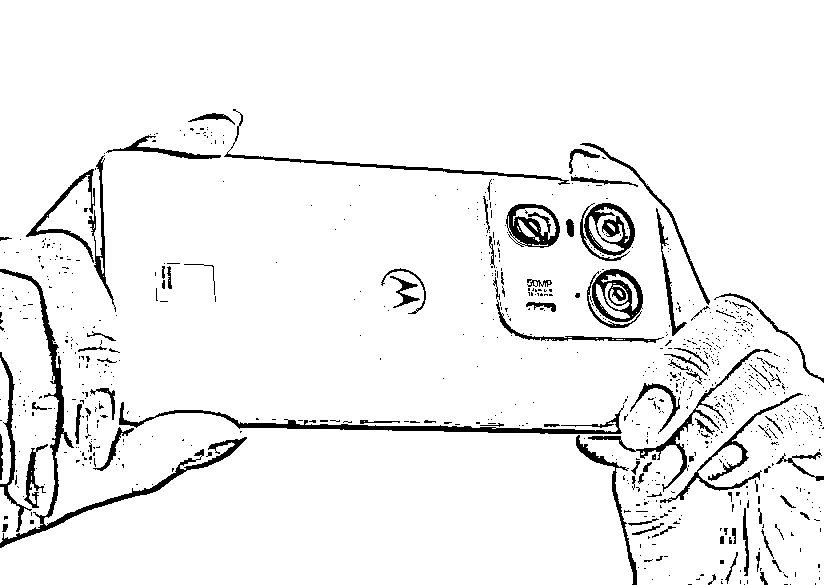
第一款是：摩托罗拉
第二款是：联想拯救者Y70
这两款是我自己亲身体验过的，适合多开微信，官方系统自带应用分身不封号的设备。具体的参数你可以直接去官网查看，或者去看测评系列的视频。
ps：关于电脑设备我这里就不做推荐，办公机、游戏机......根据你的业务需求来定，可以自行到哔哩哔哩等平台去查看数码博主们的测评。
以小红书平台举例，如果账号被封得太多的话，会被封设备，不封设备也会风控，新上的号会出现吞评论以及私信的情况，所以一台设备封过 1～3 个号就需要进行刷机。
第一步：更改-广告标识符（又称设备标识符）
安卓不会刷机的：https://onfix.cn/rom
第二步：手机重新激活
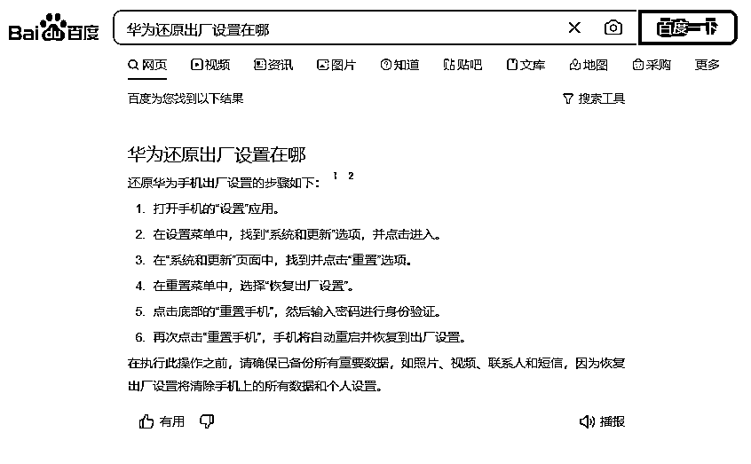
第三步：手机网络环境更改【重要】
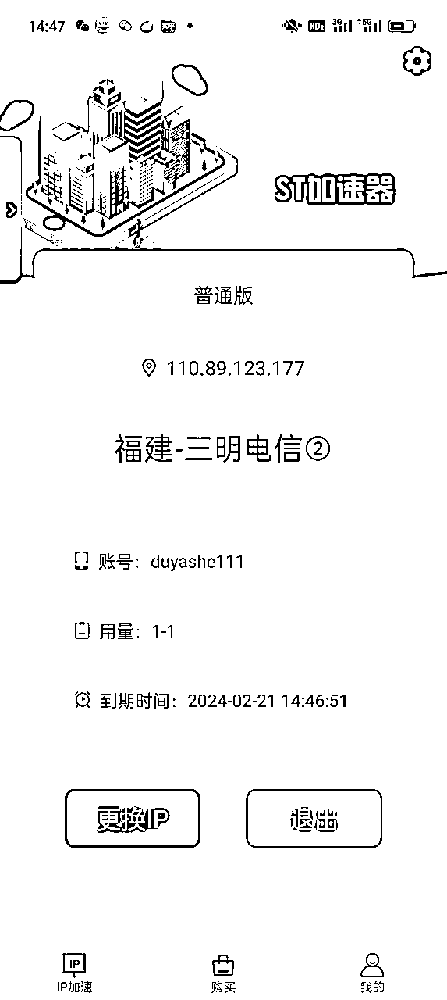
动态 IP 的作用：很多人不知道纯净 ip 怎么搞，我直接给落地思路，实测直接出评论或者恭喜没什么问题。
下载一个 ST 加速器，直接换纯净 ip。（点击下载）
每次用完都切换一下 ip 就行了，手动操作，用多少买多少，建议买独享版。
⚠️ 因为现在一个账号被封，会连同 IP 一起封，因此需要切换动态 IP。
首先在手机先“还原 iPhone”1 次～2 次，然后电脑下载爱思助手使用爱思再刷一次。
手机设置➟通用➟传输还原 iphone➟抹除所有内容和设置
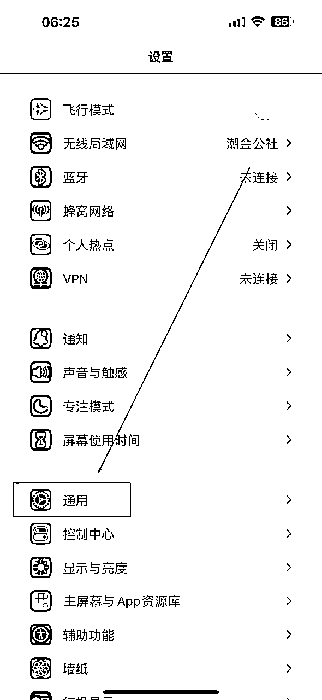
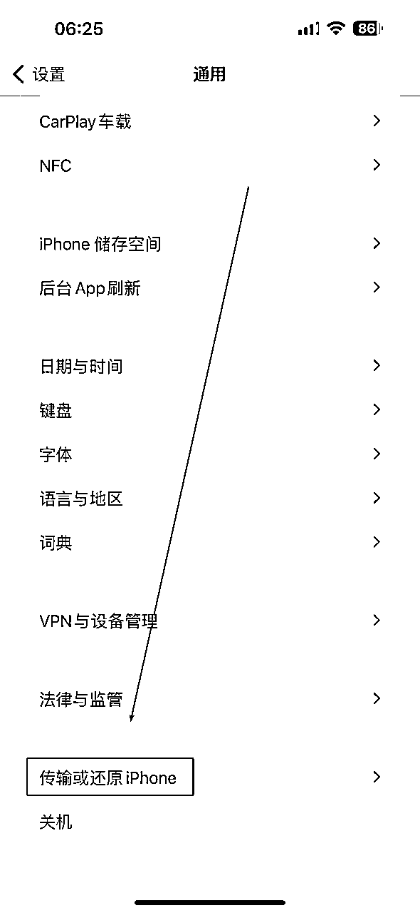
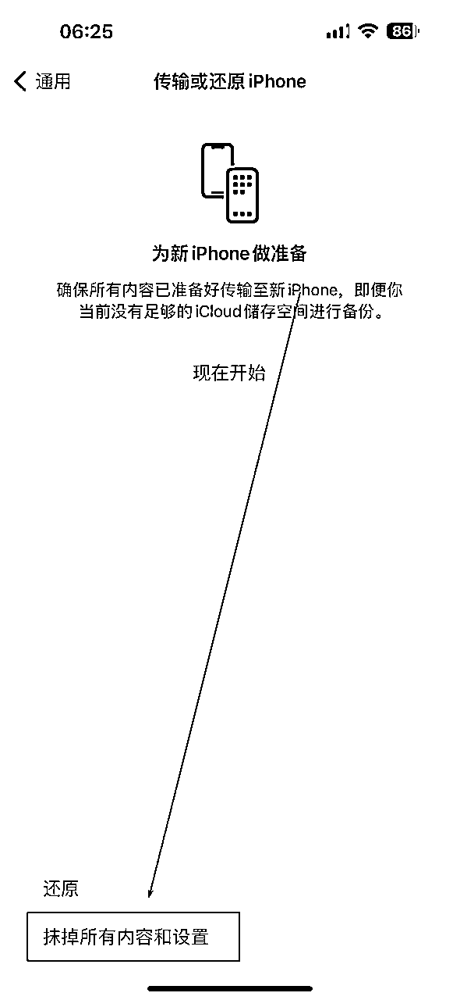
点击智能刷机 ➟ iTunes 刷机 ➟ 连接数据线 ➟ 下载固件 ➟ 点击防数据恢复刷机 ➟ 立即刷机
爱思助手官网：https://www.i4.cn/
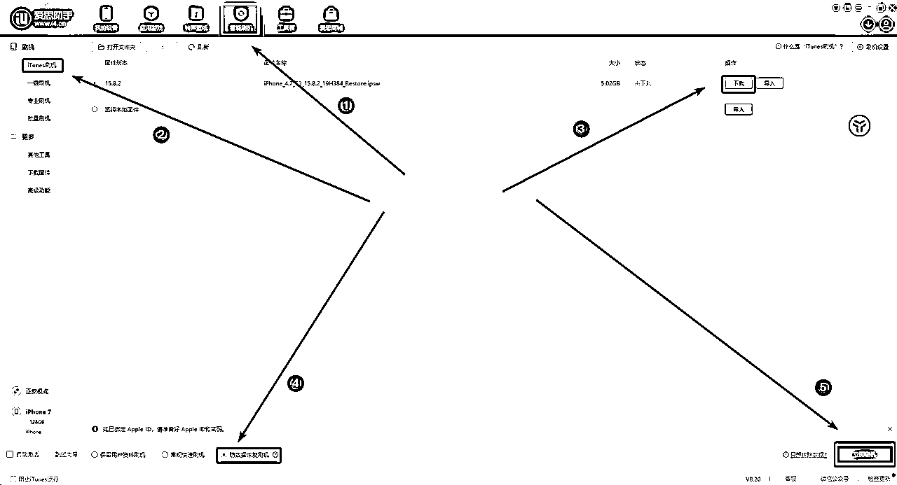
锦上添花，非刚需
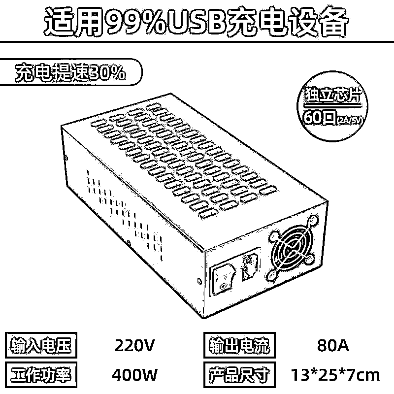
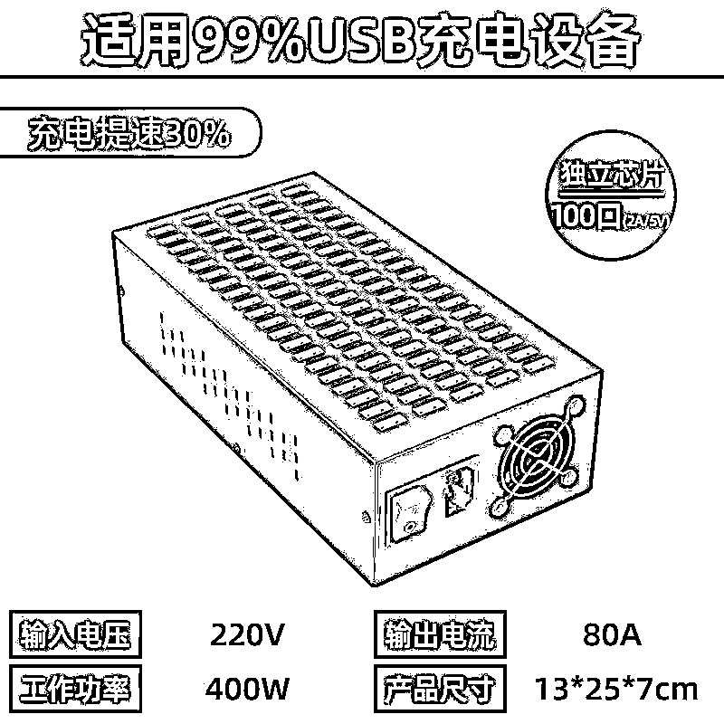
设备背后要做好标签，号卡匹配设备，要做好登记
一些措施，避免公司财产损失。
重要 TIPS （针对员工/线下合伙人）
员工入职后联系 三大运营商（合作门店）上门为员工办理号卡
签署好相关协议，或者发红包给员工。
三大姑八大姨.....都安排办理号卡
素材分发具体怎么玩呢？
第一，测素材。自己拿几个号测一下，确保素材和流量形式没问题的前提下再做这个事。短视频本质是一个素材逻辑 ，内容为王，你的素材做的不好，分发一千条一万条都没有用。
第二，有学生团队是最好的，质量非常高。别找宝妈，别问我为什么，我是专业搞私域的。说下我的玩法，找两个学生头子，一个负责招学生，一个负责管理，发布内容和发钱。
第三，结算，原则上是降本增效。不要多给，根据你的行业、客资进线的难易程度来决定，动动手指，一个学生每月能多赚两三百就特别开心，不要花冤枉钱。
第四，如果有爆了的号，我们可以花个几百块，把号收购了，然后做下投放，我自己试过搞旅游粉，最猛的时候一块不到一个客咨。
第五，你是在不懂招学生去做，也可以boss直聘，不用自己冲会员，你可以通过其他渠道去买，发居家客服，这样成本会少很多。
和大家科普一下关于市面上常见的账号类型。
🔺什么是实卡号？ 说白了就是咱们去营业厅办理的号卡，有一些也可以在网上申请。
🔺什么是接码号？说白了，通过渠道接收短信验证而获得的号码。
🔺什么是地推号？是别人通过线下送礼品让别人接收注册小红书的验证码，然后你这边登录
🔺什么是拦截号？一个平台可以查询别人未注册的账号，属于厅卡新号，这叫拦截新，同理还有拦截老号，就是别人注册过的，相当于盗号!
🔺什么是老美号？美国的小红薯号，优点是老号权重高价格低，缺点是有使用门槛
除了实名卡以外，其他接码类型账号均是违法擦边的，轻则蜀黍请喝茶，重则送银手铐。
很多用这类型账号的都是做一些擦边、违法行业居多。各位互联网小白，或者新手村小伙伴，一定要谨慎对待账号问题，不要贪图方便就轻易使用接码类型账号。
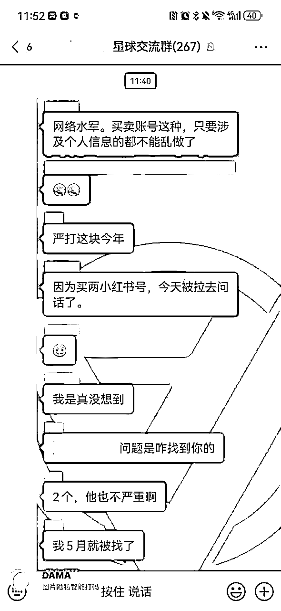
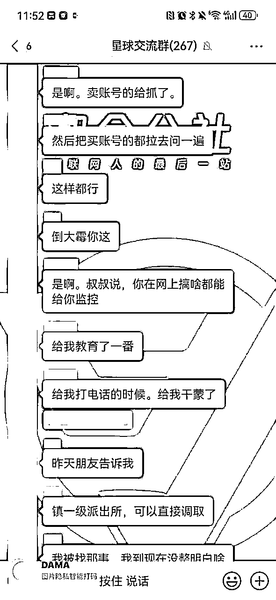
👆就是社群圈友的真实遭遇，因为买了两个账号做项目，直接被拉去喝茶了。
在我看来，对于很多做私域项目的伙伴，微信号就是最宝贵的资产。
谁的店多，谁的店活得久。
微信号注册跟养号最重要的就是“真人化”注册+社交行为。
业务号要模拟真人使用，这就是最好的养号！
微信号注册养号流程：
如果微信账号被永久封禁了，该如何解封呢？
来听听视频中这位老江湖的骚操作👉
收款也是很多工作室头疼的问题，远程收款尤其是大额容易风控。
类目参考
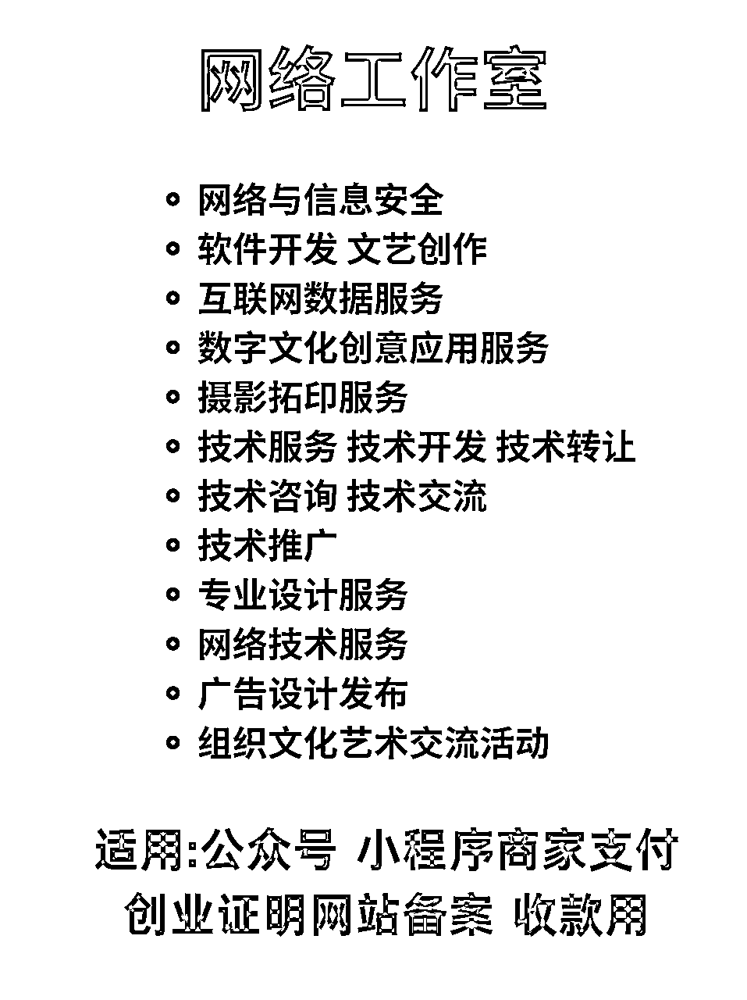
营业执照办理渠道推荐
⭐无地址：淘宝，pdd 都可以
⭐有地址：自行前往当地市场监督个管理局
直接去微信官方开通，微信支付官网地址：
https://pay.weixin.qq.com/
按照官方教程指引，一步一步引导去开通即可。
开通流程如下：
如果你有实体门店，可以直接可以去银行办理。
如果网上可以选择：虎皮椒、易支付、上海富友这类型第三方收款。
注意一下提现费率。
先说一个原则，初创公司招聘一定很难很难招到人才。
举个例子，招聘一个电商运营。什么 boss 什么智联，放心，一个能打的都没有。那还招不招呢？还得招啊。
上面三个问题你不需要会做，但是一定要懂，不然运营随便就能把你忽悠瘸了。
问的差不多了就招进来先开工，从正式产品上线一个月起。如果一个月内他做的毛利还跑平不了给他开的工资，水货，开了就完了。达不到上面那个要求就是能力不行，不要听他的借口。
有机会和大家分享，怎么找到合适的合伙人。
原则上，每一个阶段都要书面合同，避免后续的纠纷。很多小老板，就是不懂法，被员工坑。
招聘渠道：校园墙、非官媒公众号、校园兼职招聘群....
不少热血沸腾的青年，拿着东凑西凑的几十万资金，事情没做成，亏完了，很大一部分就是花在了办公室上。
办公室再好看也不是自己的，而且好看和业绩一点关系都没有。
创业初期省钱才是王道，别为了追求所谓的面子。
把钱花在搞流量上面，才是最重要的！
建议：自己家里改造、居民楼、商业公寓....低成本运作
只要一条网线，咱们就可以开干！
中国人特别讲究排场，尤其是接待。有些小伙伴业务需要好的场地。
大家说说该怎么避坑，其中有什么道道。
| 1.办公楼租赁，虽然是按月计费，但一般都要签约至少要 1 年起步，但是也不能长签 3 年以上，一般业主不会同意，或者是需要一定幅度的递增。办公楼租赁的价格很多时候分为“包票”与“净到手”“包票”即是租金内已经包含租赁税发票，“净到手”则是不含。 |
|---|
| 2、办公楼租赁还有一项管理费（物业费，按每平每月）支出，这个你要主动去问去咨询才可以，根据行业来说，20 元以下的多数都是没有中央空调或者中央空调费另计的，20 元以上的多为中央空调。管理费通常包含公共部分的水电维修保养、清洁卫生等等。(ps:1.物业费多少？是否含空调费用？ |
| 5、还有就是每个写字楼的中央空调开放时间不一样，很多都是有时间限制和月份限制的。极少写字楼会 24 小时供应，大部分都是供应上班时间（多为 8:30-18:30），另外加班需要支付一定的加班空调费。也有少部分可以自己安装独立空调，如需加班或者不想使用中央空调可以询问是否可安装独立空调。(ps:1.空调时长多少？2.是否可自己调控？3.是否可安装独立空调？) |
| 6、互联网公司经常会有通宵的情况出现，但是写字楼内是不可以住宿（有商务公寓的除外），更不可以明火煮食的，微波炉还是可以用的。不过也有复式写字楼是可以居住或者可商住的写字楼，这些都可以主动去问（ps:是否能住人？) |
| 7、另外就是停车场怎么收费了，一般老板和员工都会办理月卡，所以主要了解月卡多少钱一个月就 ok，承租面积比较大的客户，有送 1-2 个免费停车位置的，记得要争取。（个人业主除外）（ps:①停车费多少一个月或一年？②按年有没有优惠？③临停多少一小时？④日封顶多少 1 小时） |
| 8、如果你的是毛坯办公楼租赁，记得要跟业主要免租期，1～3 个月不等，具体看面积和装修风格需要的时间，这个也是可以商议的。哪怕是带装修的，也会有 1 周左右的免租期，搬办公室也需要时间嘛，对吧！修修补补总要时间吧！（ps:免租期多长时间？) |
| 9、租赁期的递增：一般租期超过一年以上的租赁期都会有不同程度的递增，一般是从第二年或者第三年开始月租金开始递增 5%-8%，有个别的大厦连管理费也一起递增。(ps:1.租金涨幅度多少？) |
| 10、合同签订：以上所有都了解清楚并谈妥后预约时间签订合同，要弄清楚你是跟业主签的还是跟二房东公司签约的。一般来说大业主和二房东都好说话，很多事情都可以找他们帮忙。（ps:你们是大业主还是二房东还是小业主？) |
| 11、办公楼租赁还有一个定金交付使用，有很多情况不允许您直接签订合同，下定金则是最好的折衷方法，一般定金下了以后，业主反悔的话需要双倍返还的 |
创业是要把时间花在刀刃上，一定要有侧重点。
.......
另外，地基不稳，再高的楼宇都有可能随时倒塌。
任何业务，前期一定要打牢固地基。
合伙人创业就要丑话说在前，个体创业就要执行力拉满。